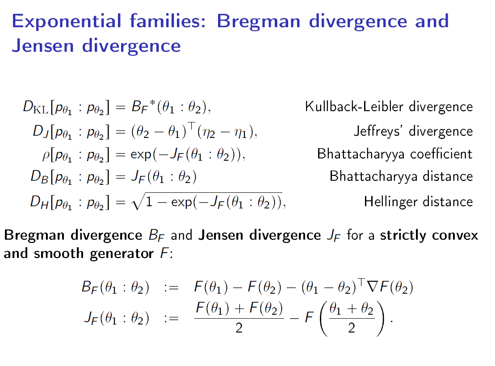

<h1>List of cards</h1>
 Click on a card and then browse previous/next card from that card.<BR>25 cards per page<BR>Card order is a random permutation.<ul><LI><A HREF="C:/Travail/WWWGitHubFrankNIELSEN/FrankNielsen.github.io/Cards/card-275.html" target="_blank"></HREF></LI>

<LI><A HREF="C:/Travail/WWWGitHubFrankNIELSEN/FrankNielsen.github.io/Cards/card-276.html" target="_blank"></HREF></LI>

<LI><A HREF="C:/Travail/WWWGitHubFrankNIELSEN/FrankNielsen.github.io/Cards/card-277.html" target="_blank"></HREF></LI>

<LI><A HREF="C:/Travail/WWWGitHubFrankNIELSEN/FrankNielsen.github.io/Cards/card-278.html" target="_blank"></HREF></LI>

<LI><A HREF="C:/Travail/WWWGitHubFrankNIELSEN/FrankNielsen.github.io/Cards/card-279.html" target="_blank"></HREF></LI>

<LI><A HREF="C:/Travail/WWWGitHubFrankNIELSEN/FrankNielsen.github.io/Cards/card-280.html" target="_blank"></HREF></LI>

<LI><A HREF="C:/Travail/WWWGitHubFrankNIELSEN/FrankNielsen.github.io/Cards/card-281.html" target="_blank"></HREF></LI>

<LI><A HREF="C:/Travail/WWWGitHubFrankNIELSEN/FrankNielsen.github.io/Cards/card-282.html" target="_blank"></HREF></LI>

<LI><A HREF="C:/Travail/WWWGitHubFrankNIELSEN/FrankNielsen.github.io/Cards/card-283.html" target="_blank"></HREF></LI>

<LI><A HREF="C:/Travail/WWWGitHubFrankNIELSEN/FrankNielsen.github.io/Cards/card-284.html" target="_blank"></HREF></LI>

<LI><A HREF="C:/Travail/WWWGitHubFrankNIELSEN/FrankNielsen.github.io/Cards/card-285.html" target="_blank"></HREF></LI>

<LI><A HREF="C:/Travail/WWWGitHubFrankNIELSEN/FrankNielsen.github.io/Cards/card-286.html" target="_blank"></HREF></LI>

<LI><A HREF="C:/Travail/WWWGitHubFrankNIELSEN/FrankNielsen.github.io/Cards/card-287.html" target="_blank"></HREF></LI>

<LI><A HREF="C:/Travail/WWWGitHubFrankNIELSEN/FrankNielsen.github.io/Cards/card-288.html" target="_blank"></HREF></LI>

<LI><A HREF="C:/Travail/WWWGitHubFrankNIELSEN/FrankNielsen.github.io/Cards/card-289.html" target="_blank"></HREF></LI>

<LI><A HREF="C:/Travail/WWWGitHubFrankNIELSEN/FrankNielsen.github.io/Cards/card-290.html" target="_blank"></HREF></LI>

<LI><A HREF="C:/Travail/WWWGitHubFrankNIELSEN/FrankNielsen.github.io/Cards/card-291.html" target="_blank"></HREF></LI>

<LI><A HREF="C:/Travail/WWWGitHubFrankNIELSEN/FrankNielsen.github.io/Cards/card-292.html" target="_blank"></HREF></LI>

<LI><A HREF="C:/Travail/WWWGitHubFrankNIELSEN/FrankNielsen.github.io/Cards/card-293.html" target="_blank"></HREF></LI>

<LI><A HREF="C:/Travail/WWWGitHubFrankNIELSEN/FrankNielsen.github.io/Cards/card-294.html" target="_blank"></HREF></LI>

<LI><A HREF="C:/Travail/WWWGitHubFrankNIELSEN/FrankNielsen.github.io/Cards/card-295.html" target="_blank"></HREF></LI>

<LI><A HREF="C:/Travail/WWWGitHubFrankNIELSEN/FrankNielsen.github.io/Cards/card-296.html" target="_blank"></HREF></LI>

<LI><A HREF="C:/Travail/WWWGitHubFrankNIELSEN/FrankNielsen.github.io/Cards/card-297.html" target="_blank"></HREF></LI>

<LI><A HREF="C:/Travail/WWWGitHubFrankNIELSEN/FrankNielsen.github.io/Cards/card-298.html" target="_blank"></HREF></LI>

<LI><A HREF="C:/Travail/WWWGitHubFrankNIELSEN/FrankNielsen.github.io/Cards/card-299.html" target="_blank"></HREF></LI>

</ul><BR> <A HREF="index11.html">Previous card page</A>&nbsp;&nbsp;&nbsp; <A HREF="index13.html">Next card page</A>
